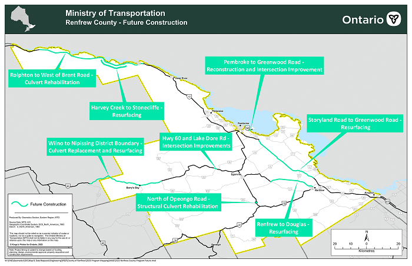
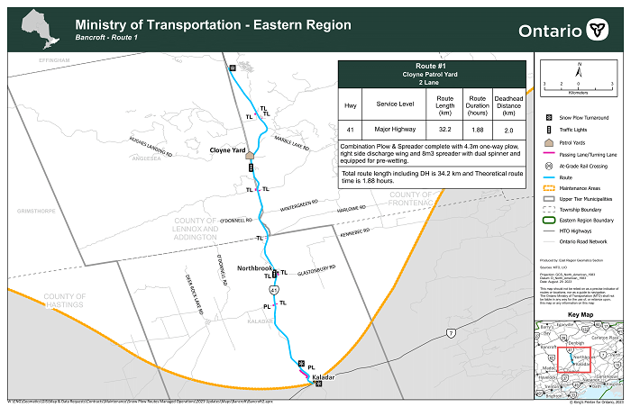
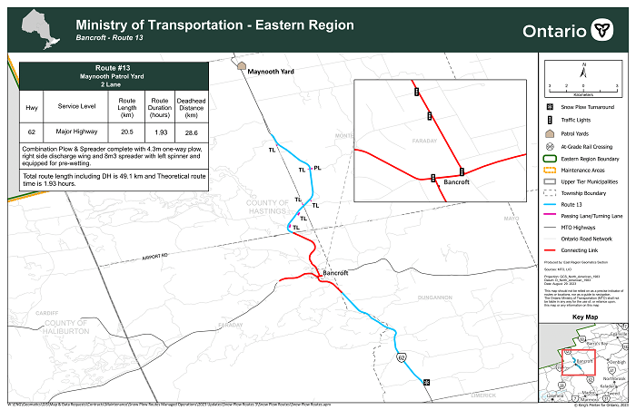

This portfolio shows a portion of my work done during two summer work terms
This map was made for North Beach Provincial Park to be used in their day use flyers
This image shows the ferry routes for Eastern Ontario
This image shows construction in Renfrew County
 These images show two snow plow routes made for the Bancroft Region's Maintenance Department